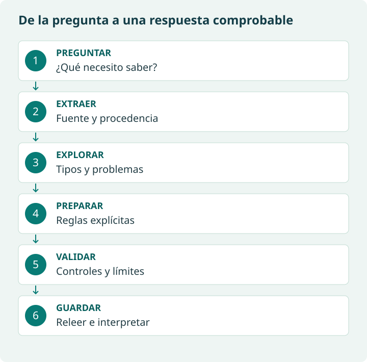
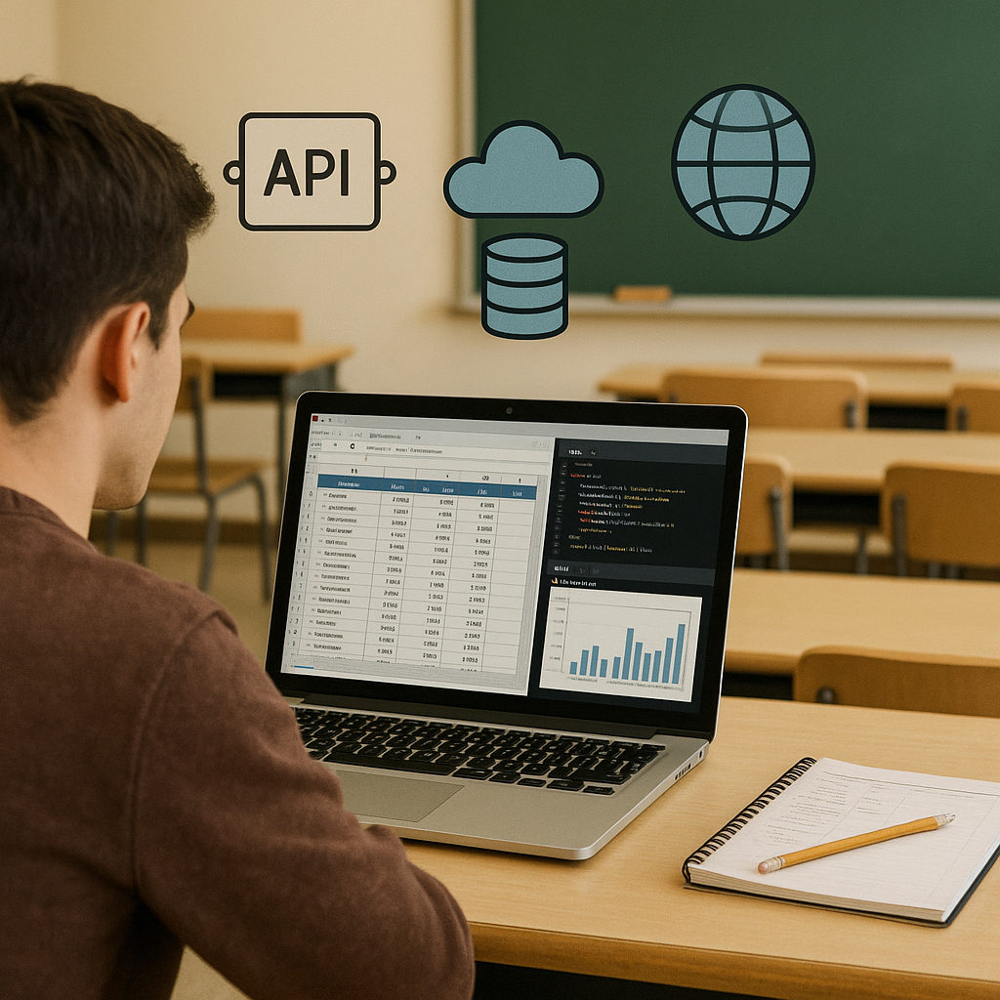

Cómo estudiar esta unidad
Aprenderás a convertir datos en una tabla comprobable y a explicar las decisiones que has tomado. La pregunta que guía el recorrido es: ¿qué clientes de Madrid tienen más de 30 años y cómo sabemos que el resultado es fiable? Después aplicarás el mismo procedimiento a meteorología, productos y texto.

| Recorrido | Lectura y práctica | Evidencia |
|---|---|---|
| 1. Orientarse | Objetivos, introducción y mapa de conceptos. | Explicar fuente, formato y acceso con un ejemplo. |
| 2. Archivos y calidad | Métodos + preparación; ejemplo CSV y actividad 1. | Tabla original, incidencias y tabla preparada. |
| 3. API y HTML | Métodos; ejemplos de meteorología y productos. | Petición explicada y tabla con campos y unidades. |
| 4. Integrar | Herramientas ETL; actividades 2–4. | CSV final, controles e interpretación. |
En cada apartado: lee, predice qué ocurrirá, ejecuta un ejemplo y contrasta la salida. Las preguntas desplegables incluyen una respuesta razonada. El menú y los enlaces originales se conservan; los nuevos recuadros desarrollan la explicación.
Cuaderno y datos de apoyo
El enlace original a Google Colab sigue disponible más abajo. Guarda una copia propia y ejecuta las celdas en orden. Esta revisión de la web no modifica los cuadernos externos: para la ruta básica utiliza los ejemplos completos de esta web cuando el cuaderno requiera herramientas avanzadas.
Descargar cuaderno de apoyo de esta revisión · CSV didáctico de clientes · HTML de productos · JSON meteorológico simulado. Los datos son ficticios y están identificados como material de práctica; no sustituyen silenciosamente las fuentes originales.
El cuaderno de apoyo reúne las demostraciones nuevas y celdas de trabajo para las actividades. En Colab usa «Archivo → Subir cuaderno». Los ejemplos con datos incluidos no necesitan consultar servicios externos; la consulta real a la API sí requiere Internet.
Material de referencia original

https://colab.research.google.com/drive/1JvpH-IoMbgZzOoRdAXq2zTusWKUXLk74?usp=sharing